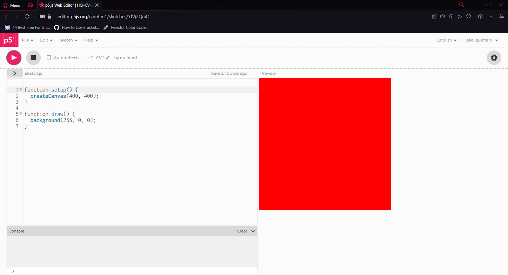
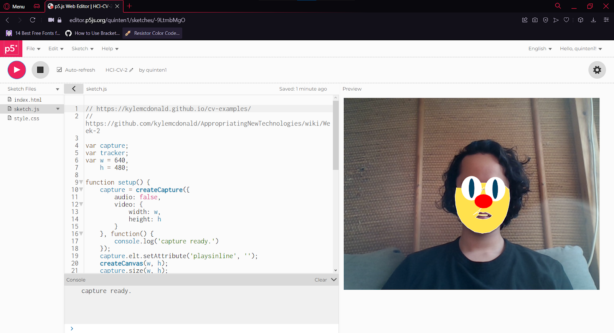

Computer vision
Portfolio Assignment 3: Add color

Adding color to a canvas in p5.
Portfolio Assignment 7: Computer Vision tinkering

Tinkering with a face tracking library to track a clown face onto my head.
Portfolio Assignment 8: Hand position and distance
Portfolio Assignment 9: Cheer detection